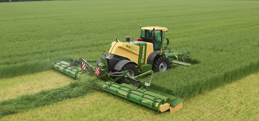
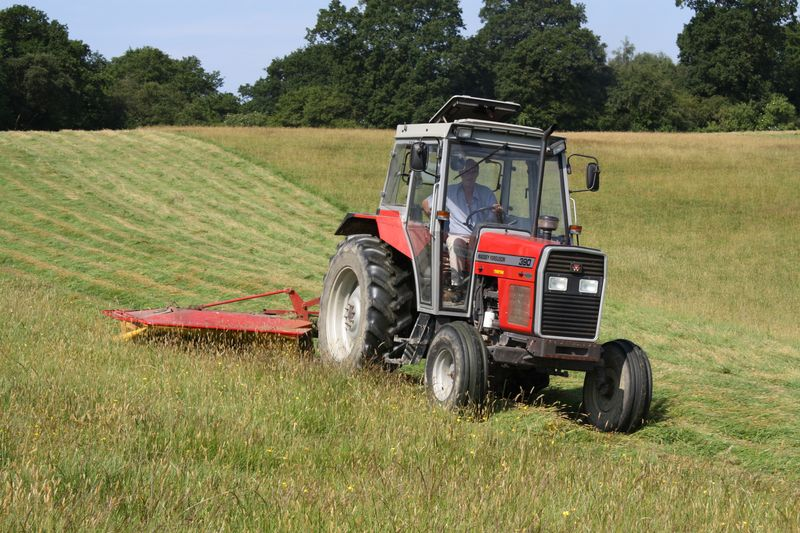

Mowing is the first main task in the silage making process. For first cut silage, you should allow suffienct time after applying feriliser in spring, approx 8 weeks to allow the nitrogen to be fully taken up by the grass. Mowing can be done during dry spells of weather and shoudl be planned so that there are a couple of dry days forcasted.
WIT Agri Contractors Ltd offer mowing service using either a Krone big M mower for bigger fields. This machine can also put 40 feet of grass into one sward or can spread evenly behind the mower to wilt. We would reccomend for heavy crops to spread out to wilt the grass for at least 24 hours before raking up for the baler to pick up. Thsi is best practice to increase dry matter yeild.
For the smaller fields we have a very manovarable system using a MASSEY FERGUSON 390 and a drum mower. This suits farms with small fields and particularly small entances into the fields. On marginal land which is soft we can fit the Massey with dual wheels to lessen the impact of ground pressure. For those of you who like to grow weeds and leave stones in the field, the drum mower is ideal too to take this abuse, as we do not want to damage the bigM and write it off. There is no need to spead out the grass with this mower as its a very narrow sward, we would use the silage rake to rake into large rows for the baler, otherwise we would be driving around the field all day with the baler.